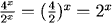
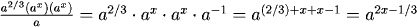
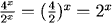
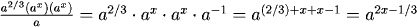

Real (Irrational) and Variable Exponents
The definitions and rules for exponents which are integers or rational numbers also apply when the exponent is an irrational number or variable, as in
$$x^{\sqrt{3}}\ or\ 5^x$$
Recall that these are the following:
Definitions:
| \(a^0 = 1\) | (if \(a\) isn't zero) |
| \(a^1 = a\) | |
| \(a^{-1} = \frac{1}{a}\) | |
| \(a^{-n} = \frac{1}{n}\) |
Rules for Exponents:
| \(a^m*a^n = a^{m+n}\) | multiplying powers |
| \(\frac{a^m}{a^n} = a^{m-n}\) | dividing powers |
| \((a^m)^n = a^{mn}\) | raising a power to a power |
| \((ab)^n = a^nb^n\) | power of a product |
| \((\frac{a}{b})^n = \frac{a^n}{b^n}\) | power of a quotient |
Examples
As always, as you go through these be sure that you can explain each step of each example.
Section TestAs always, as you go through these be sure that you can explain each step of each example.
1. 
2.
4. 
5. 
2.
4. 
5. 
Once you've finished going through the examples above, go to the section test. This will give you both practice at problems involving exponentials and allow you to verify that you understand the material in this section.
Return to Main